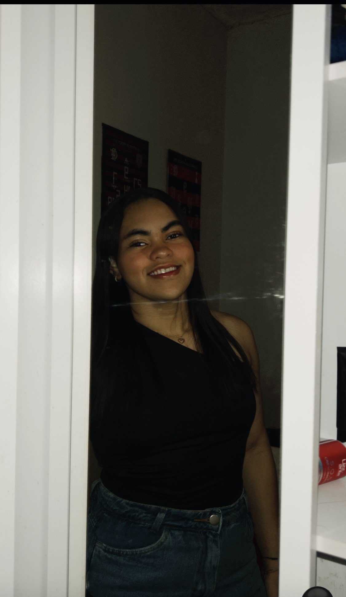

Minha apresentação

Meu nome é Maria Gisely Valdevino da Silva. Nasci em Santo Antônio, moro em Nova Cruz e adoro escutar diversos tipos de música.
Gosto de jogar no meu tempo livre, sou apaixonada por esportes e já joguei vôlei, futebol e handebol, tanto na areia quanto na quadra. Participei dos JERNs e dos Juverns, conquistando quatro medalhas de bronze nos JERNs: uma no futsal e três no handebol de areia, sendo duas no ano passado, uma na fase regional em Nova Cruz e outra na fase final.
Hoje em dia, graças ao IF, consegui voltar para o futsal, realizando o meu grande sonho de infância.
Redes sociais e sites que gosto de acessar
O que eu gosto e por quê
| Preferência pessoal | Por que gosto? |
|---|---|
| Flamengo | O Flamengo é uma verdadeira paixão e inspiração para mim, um time que me encantou desde o primeiro momento em que o vi. Eu teria um desgosto profundo se faltasse o Flamengo no mundo. |
| Música | Para mim, a música é uma forma de entender o mundo. Ela é uma forma de arte e uma ferramenta poderosa de crítica social, que serve como resistência e desabafo para a sociedade. |
| Esporte | O esporte é uma forma de esvaziar a cabeça e esquecer a maioria dos problemas. Também é uma forma de praticar exercícios físicos para manter o corpo saudável. |